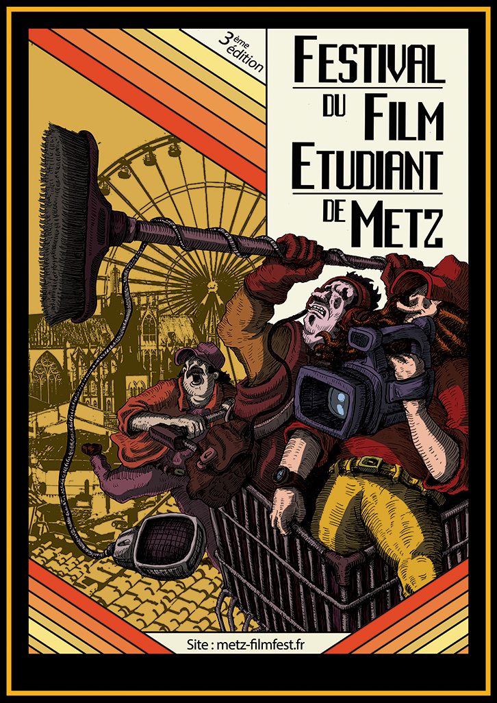

FESTIVAL DU FILM ETUDIANT DE METZ
In spring 201, one of my friend who was in studying cinema, asked me to build a website to speak about about their student film festival at Metz (France) and to keep track of the registration and the contestant. The website had to take care of registrations, contestant selection and administration, showcasing the selected shorts along side with provinding informations on their association. I made the website in Symfony and Bootstrap, and some Javascript for some admin UI part. The art was made by Romain Garnier
Unfortunately, the website isn't online anymore. After the third edition, the association's bureau changed and moved to Facebook.
